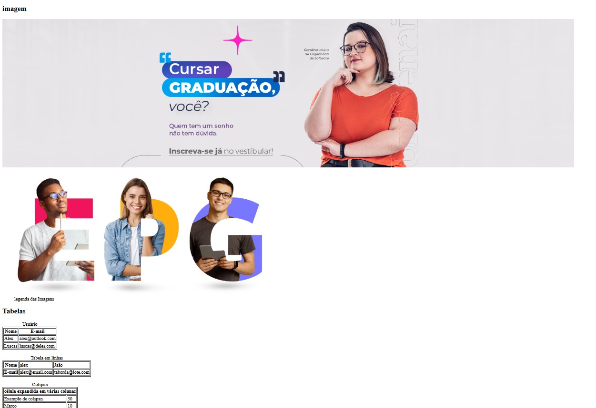
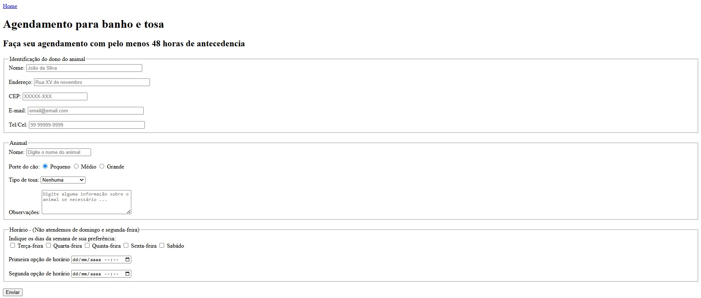
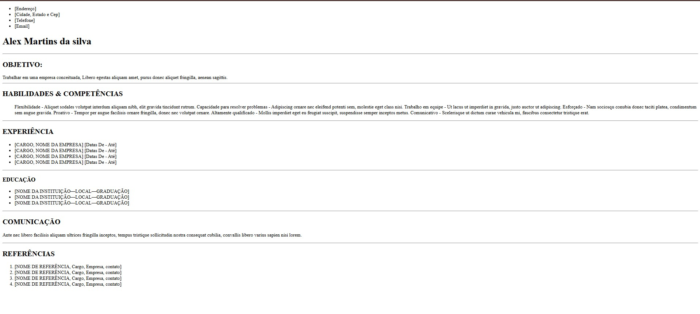
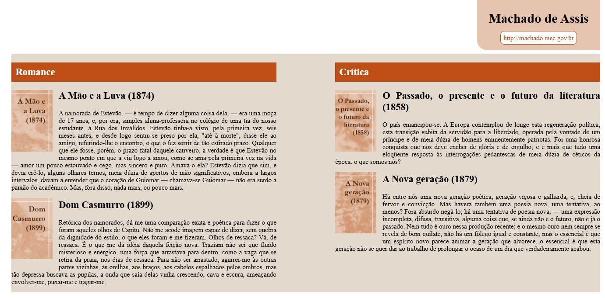
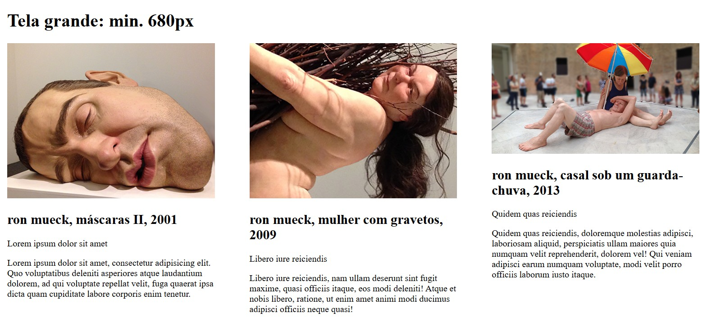

Html e CSS
Alex Martins 09/05/2025
Página pessoal com resumos e
aprendizados das atividades de Front-End,
baseada no modelo “Portal da Floresta”.
Aula 1 - Introdução ao HTML e CSS
Resumo: Criamos nossa primeira página HTML aplicando estilos com CSS externo. Exploramos tags básicas como h1, p, img e link. O que aprendi: Compreendi como estruturar uma página web simples e como usar CSS externo para alterar visualmente os elementos. Arquivo: CAP01/html-css/aula1.html
Aula 2 - Revisão: Listas, Tabelas e Links
Resumo: Revisamos elementos de estrutura como listas ordenadas, tabelas com thead e tbody, e navegação com links. O que aprendi: Aprimorei a habilidade de montar estruturas organizadas em HTML e compreendi melhor o uso semântico de tabelas. Arquivo: CAP01/html-css/revisao_aula1.html
Aula 3 - Formulários em HTML
Resumo: Desenvolvemos um formulário completo com campos de texto, seleção, caixa de verificação e botão de envio. O que aprendi: Aprendi a criar formulários que recebem dados dos usuários de maneira estruturada e funcional. Arquivo: cap02/formulario.html
Aula 4 - Múltiplas Páginas: Currículo, Mural e Cursos
Resumo: Criamos um pequeno site com páginas conectadas entre si usando links internos e menus. O que aprendi: Compreendi como planejar e organizar um site com navegação clara entre diferentes seções e arquivos. Arquivo: cap02/Exercicios_Aula1403/index.html
Aula 5 - Layout com Float
Resumo: Utilizamos a técnica de float em CSS para organizar elementos em colunas e seções lado a lado. O que aprendi: Descobri como aplicar float e como limpar corretamente os elementos flutuantes usando clear. Arquivo: CAP05/float/float.html
Aula 6 - Design Responsivo com Media Queries
Resumo: Adaptamos páginas para diferentes tamanhos de tela usando @media no CSS. O que aprendi: Entendi os princípios do design responsivo e como aplicá-los para melhorar a experiência em dispositivos móveis. Arquivo: CAP05/design-responsivo/index1.html